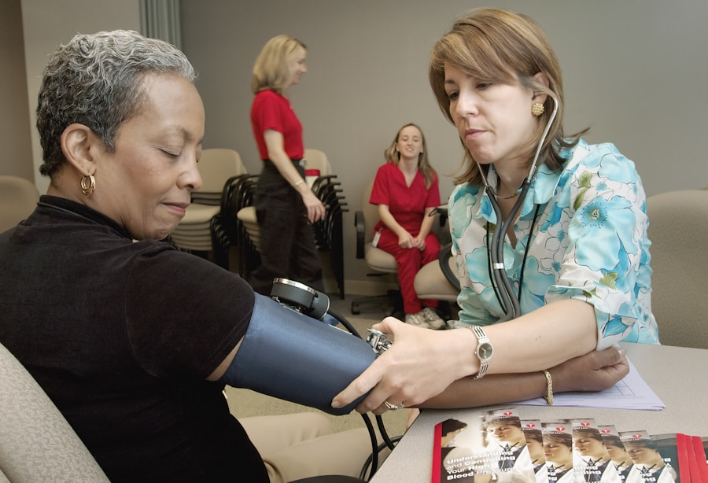

First Aid · 4 minute read
Hot water bottle burns — why they're worse than fire

Here's a statistic that surprises people: hot water bottles cause more burn admissions to children's A&E than open flames. The reason isn't temperature — it's contact time.
This article explains why, and exactly what to do if your child gets burned. The first 20 minutes matter enormously for scarring.
Why hot water bottles are worse than fire
A pan on the stove is briefly very hot — kids tend to pull away in milliseconds. A hot water bottle leaks slowly, doesn't trigger an instant pain response (especially in sleeping children), and stays in contact for minutes or hours.
Result: deeper, fuller-thickness burns that need skin grafts. The temperature is lower than a flame, but the contact time is hundreds of times longer.
The same applies to:
- Electric heat pads left on overnight
- Hair straighteners on the floor
- Spilled hot drinks that pool against skin
- Microwave wheat bags (often hotter than they feel)
What to do — the 4 Cs of burn first aid
1. COOL the burn under cool running water for 20 minutes.
Twenty minutes. Not five. Twenty. This is the single most important thing — it's been shown to reduce the depth of burns and the need for surgery.
Use cool tap water (not ice — ice causes additional injury). The whole 20 minutes, even if it's painful, even if your child wants to stop. This is more important than rushing to A&E.
2. CLOTHING and jewellery off.
Carefully remove anything around the burn, but DO NOT pull off anything that's stuck to the skin. Cut around it with scissors instead.
3. CALL for help.
Call 999 if the burn is on the face, hands, feet, genitals, or covers more than the size of the child's palm. Otherwise, call 111 or take them to A&E once you've cooled the burn for the full 20 minutes.
4. COVER the burn.
After cooling, cover loosely with cling film (not too tight — burns swell). Cling film is brilliant: it doesn't stick to the wound, it's clean, and it lets the medical team see what they're dealing with.
What you should NOT do
- No butter, oil, toothpaste, egg whites, aloe vera, or any other home remedy. These trap heat and cause infection.
- No ice. It causes additional cold injury on top of the burn.
- Don't burst blisters. They're sterile until you break them.
- Don't apply plasters or fluffy dressings. They stick.
- Don't underestimate it. Burns from hot water bottles can look fine in the first hour and get much worse over 24-48 hours.
Prevention — the simple rules
- Replace your hot water bottle every two years. Look for a flower-stamp date on the neck. Old rubber perishes and leaks.
- Never give to anyone under 5 years old. Use a microwaved wheat bag instead — and check the temperature on your wrist first.
- Always use the cover. Skin contact is what causes the deep burns.
- Don't use boiling water. Recently boiled is fine.
- Never sit or lie on a hot water bottle. Adults included.
Practising this on a manikin
Twenty minutes feels like an eternity when your child is screaming. We practise the technique and the timing in my parent first aid course — including how to keep them calm enough to let you cool the burn properly.
2-Hour Parent First Aid in your home, £150 for up to 6.
Burns and scalds — practise the response
Knowing 'cool the burn for 20 minutes' is one thing; doing it while your child is upset is another. We cover burns, scalds and choking hands-on in my 2-hour course.
Book the 2-Hour Parent Course→Eva Levinson is a Postnatal Midwifery Assistant for the NHS, a Doula UK trained doula, and an Ofsted/HSE compliant first aid instructor. She runs And Chillax in Anerley, South London.